我们在这个实验中学习RISC-V中的trap处理机制，理解并实现上下文切换的过程，掌握时钟中断的处理流程。
解决方案：实际上是因为运行时间不够长，执行printk的累计时间没有超过时钟中断的间隔时间。当运行到第695次时钟中断时，第一次观察到失去同步的现象，这个数值可以验证思考题4中对于printk执行时间的估算（1MHz/20250约等于500，基本符合观察到的695）.
为什么要保存寄存器？
中断处理程序trap_handler在执行时需要用到寄存器，并且修改寄存器中的值。如果不保存寄存器的值，处理程序执行完毕后，原来的寄存器值会丢失，导致中断发生前的程序无法正确继续执行。
entry.S中保存和恢复t0的代码注释掉然后重新编译。# sd x5, 24(sp)
...
# ld x5, 24(sp)
_traps开始处和sret处设置断点，运行程序并观察t0寄存器的值。(gdb) b _traps
(gdb) c
(gdb) i r t0
(gdb) b *0x000000008020017c
(gdb) c
(gdb) i r t0
trap_handler时，t0寄存器的值会被修改（0x0变为0x802001e4）。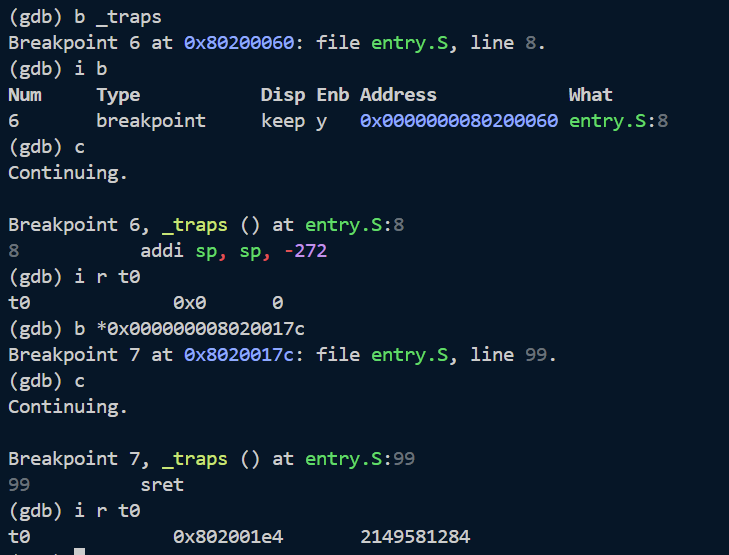
为什么要保存sepc而其他特权寄存器不需要？
sepc寄存器记录了中断发生时CPU正在执行的指令的地址，中断处理结束后需要通过sepc恢复程序的执行。如果发生嵌套中断，sepc会被覆盖，因此必须保存。其他特权寄存器在中断处理过程中不会被修改或者是只读的，因此不需要保存。
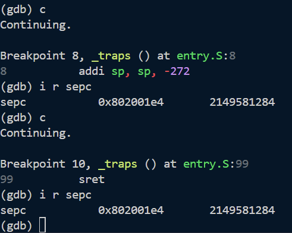
(gdb) b _traps
(gdb) c
(gdb) i r sepc <-- 记录正确值
(gdb) b *0x8020017c <-- 在 sret 处断点
(gdb) c
(gdb) set $sepc = 0 <-- 手动破坏 sepc
(gdb) si <-- 执行 sret
(gdb) p/x $pc <-- 查看 PC
(gdb) i r sepc <-- 查看 sepc
结果显示，执行trap_handler后，sepc寄存器的值会被修改（0x802001f4变为0x0），但是pc的值又回到了_traps的入口0x80200060。
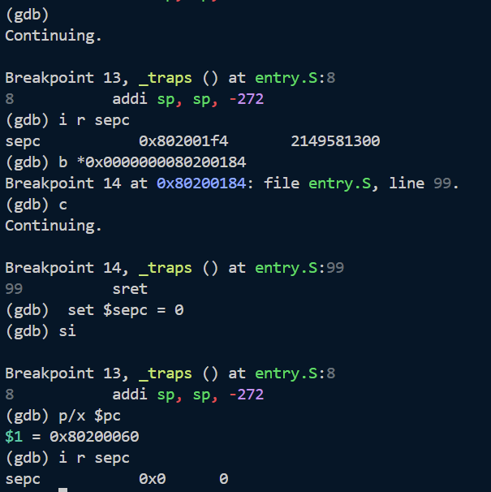
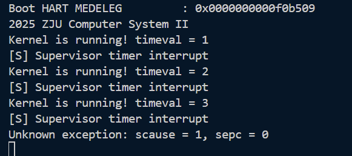
stvec中设置的地址0x80200060（在head.S中设置），重新进入了_traps处理程序。根据我在trap.c中的设置，遇到exception会打印错误信息并进入死循环。
...
else{
// 处理异常
printk("Unknown exception: scause = %lx, sepc = %lx\n", scause, sepc);
// 死循环
while(1);
}
为什么要保存在栈上？
栈的LIFO特性适用于函数嵌套调用调用，中断处理程序可能会被嵌套调用，因此使用栈来保存寄存器和sepc是合适的选择。而且每个线程都会有自己的栈，将寄存器保存到栈上可以避免不同线程之间的冲突.
make run 时，OpenSBI 会产生如下输出： Boot HART MIDELEG : 0x0000000000001666
Boot HART MEDELEG : 0x0000000000f0b509
查阅 The RISC-V Instruction Set Manual: Volume II - Privileged Architecture，解释你的 OpenSBI 给出的 MIDELEG 和 MEDELEG 值的含义。如果实验中 mideleg 和 medeleg CSR 没有被正确设定，会有什么影响？
我的 OpenSBI 给出的 MIDELEG 和 MEDELEG 值和上述值相同。
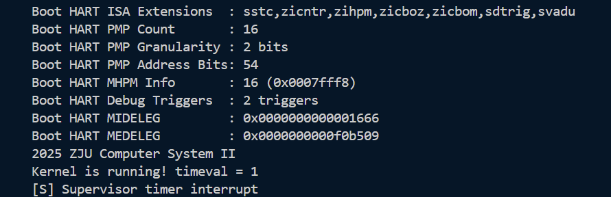
To increase performance, implementations can provide individual read/write bits within medeleg and mideleg to indicate that certain exceptions and interrupts should be processed directly by a lower privilege level.
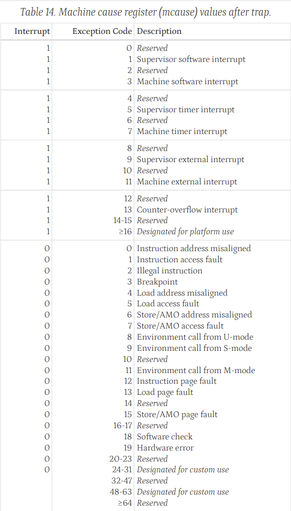
在RISC-V中，mideleg和medeleg寄存器用于指示哪些中断和异常应该被委托给较低特权级别（如Supervisor模式）处理。每个位对应一种特定的中断或异常类型，如果该位被设置为1，则表示该类型的中断或异常将被委托给较低特权级别处理。
查表可知：
Boot HART MIDELEG : 0x0000000000001666二进制值位... 0001 0110 0110 0110，表示以下中断被委托给Supervisor模式处理：
Boot HART MEDELEG : 0x0000000000f0b509二进制值位... 1111 0000 1011 0101 0000 1001，表示以下异常被委托给Supervisor模式处理：
参考The RISC-V Instruction Set Manual: Volume I - Unprivileged Architecture 第 1.2 节中的下面一段话：
The implementation of a RISC-V execution environment can be pure hardware, pure software, or a combination of hardware and software. For example, opcode traps and software emulation can be used to implement functionality not provided in hardware.
RISC-V的执行环境可以是硬件与软件的组合。要想在不支持M扩展的处理器（hardware）上执行M扩展指令，可以通过软件模拟的方式来实现。具体来说，当处理器遇到M扩展指令时，可以触发一个异常（opcode trap），然后由操作系统或运行时环境捕获这个异常，并通过软件模拟的方式（用基础整数指令模拟乘除运算）来执行该指令的功能。这种方法允许在不具备硬件支持的情况下，仍然能够执行M扩展指令。
test 函数的输出和时钟中断的输出出现失去同步的情况： [S] Supervisor timer interrupt
Kernel is running! timeval = 195
[S] Supervisor timer interrupt
Kernel is running! timeval = 196
Kernel is running! timeval = 197
[S] Supervisor timer interrupt
Kernel is running! timeval = 198
[S] Supervisor timer interrupt
请分析这种现象的原因，问题出在 test 函数还是时钟中断上？请通过gdb调试截图来说明问题。请修改代码，来保持两者的同步
tips：请备份修改前的代码，这个修改在完成思考题5之后可以复原，便于后续实验的进行
我的程序在运行到第695次时钟中断时，出现了失去同步的情况。
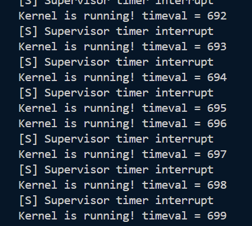
clock.c时钟中断的设置方式上。在clock_set_next_event函数中，我们通过以下代码设置下一个时钟中断：
asm volatile("rdtime %0" : "=r"(time)); // 获取当前时间
uint64_t next = time + TIMECLOCK; // 下一次 = 当前 + 间隔
sbi_set_timer(next);
这里我们每次都从rdtime获取当前时间，然后加上一个固定的间隔TIMECLOCK来设置下一个中断时间。然而，由于printk函数的输出需要一定的时间，如果printk的累计的执行时间超过了TIMECLOCK，就会导致test函数的输出和时钟中断的输出失去同步。
clock_set_next_event函数入口处设置断点，观察连续两次中断之间的时间差。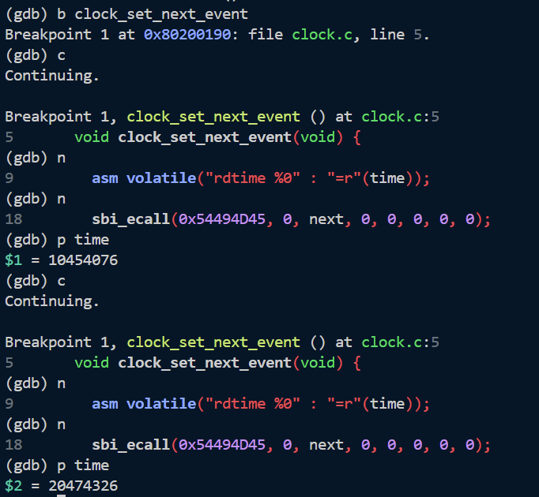
TIMECLOCK，产生了时间为20250的延迟，这个延迟在循环中不断累积，最终导致了失去同步的现象。为了解决这个问题，我们可以修改clock_set_next_event函数，使其基于上一次中断的时间来计算下一次中断时间，而不是每次都从当前时间开始计算。修改后的代码如下：
static uint64_t last_time = 0; // 记录上一次中断时间
void clock_set_next_event() {
uint64_t time;
if (last_time == 0) {
asm volatile("rdtime %0" : "=r"(time)); // 获取当前时间
last_time = time;
}
last_time += TIMECLOCK; // 下一次 = 上一次 + 间隔
sbi_ecall(0x54494D45, 0, last_time, 0, 0, 0, 0, 0);
}
修改后再次进行gdb调试，发现连续两次中断的时间差30403032-20403032等于TIMECLOCK，成功保持了同步。
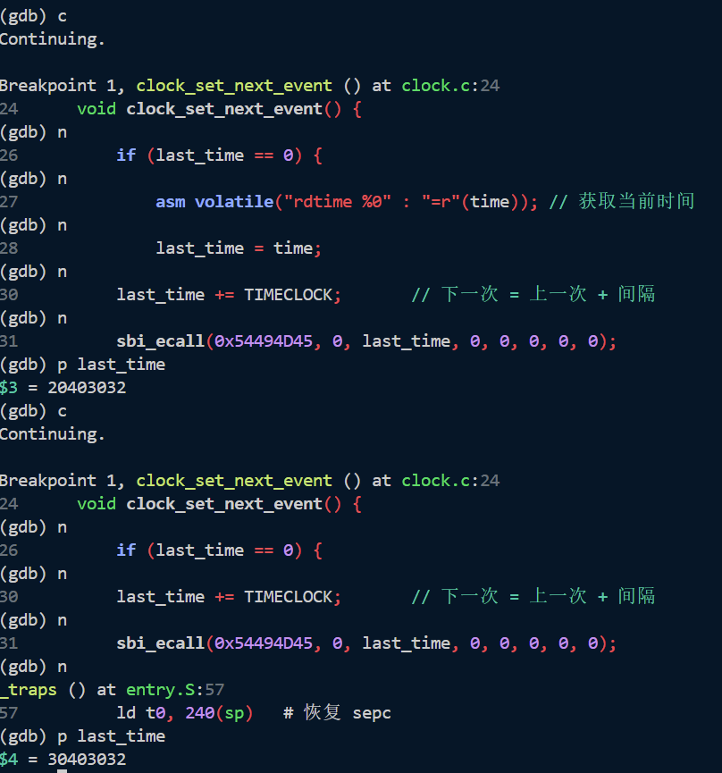
test 函数中的 printk 输出信息需要的时间。假定时钟频率为 10 MHz，在确保每次 timeval 变化时，信息都能被完整输出的情况下，每秒最多可以发生多少次时钟中断？请尝试修改 TIMECLOCK 和其他可能需要修改的地方，验证这个值。只需近似计算即可。 test函数中，我们可以在每次执行printk前后使用rdtime指令获取时间戳，然后计算两次时间戳的差值来估算printk函数的执行时间。具体实现如下：asm volatile("rdtime %0" : "=r"(start));
printk("Kernel is running! timeval = %" PRIu64 "\n", timeval);
asm volatile("rdtime %0" : "=r"(end));
printk("printk took %" PRIu64 " cycles\n", end - start);
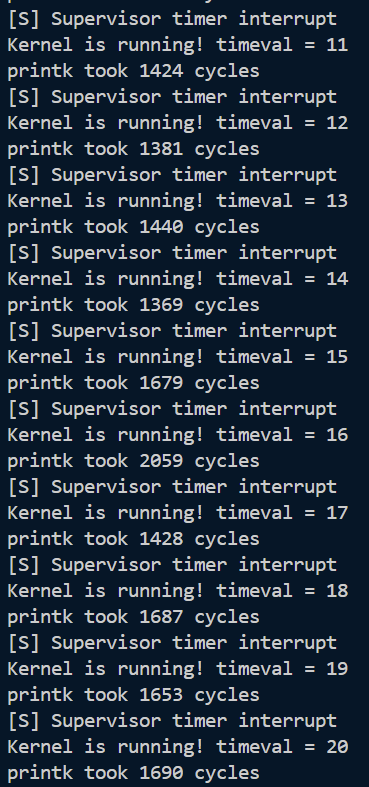
计算printk需要时间：
取第11-20次输出的平均值，printk函数的平均执行时间约为
计算最大时钟中断频率：
为了确保信息能被完整输出，需要每次中断的间隔时间大于等于printk的执行时间
最小间隔为 cycles
最大频率为 Hz
验证：
将TIMECLOCK设置为2500（小于printk执行时间），运行程序，发现输出信息出现了丢失，只能看到[S] Supervisor timer interrupt，无法看到Kernel is running! timeval = ...的信息。这说明CPU时间完全用于处理中断，没有执行test。
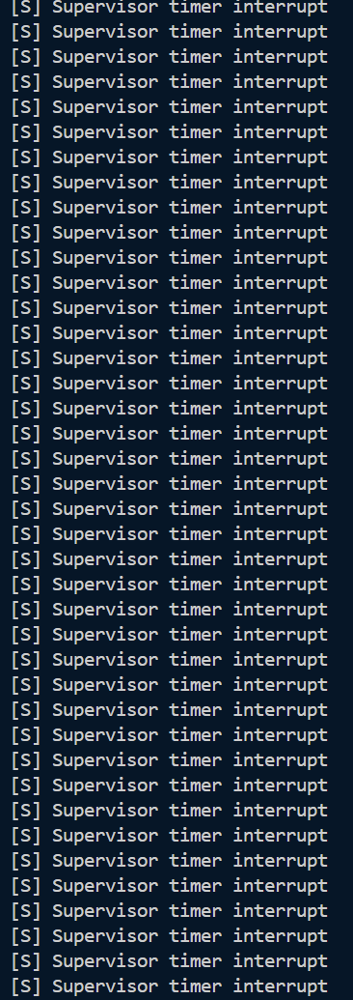
将TIMECLOCK设置为4000（大于printk执行时间），运行程序，发现可以看得到Kernel is running! timeval = ...的信息，说明test函数有机会执行，验证了计算的最大频率大致正确。
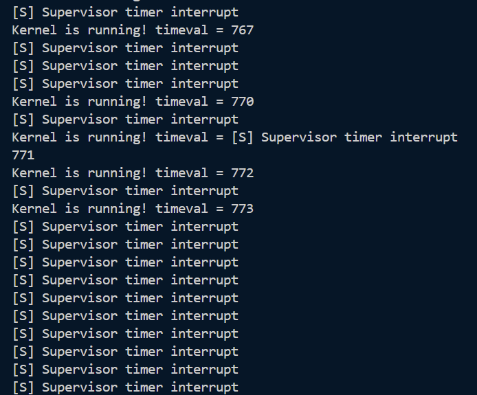
思考题很有分量。